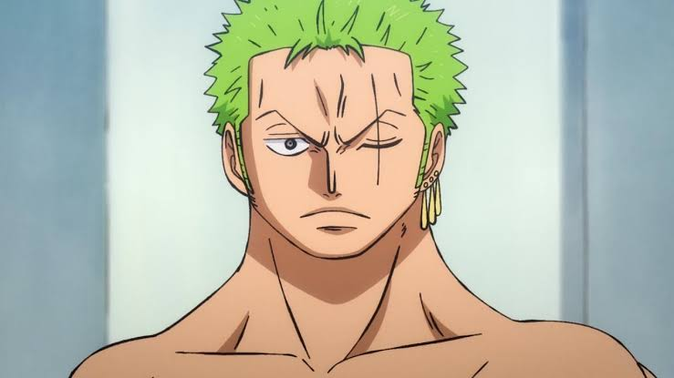
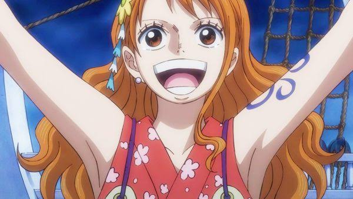
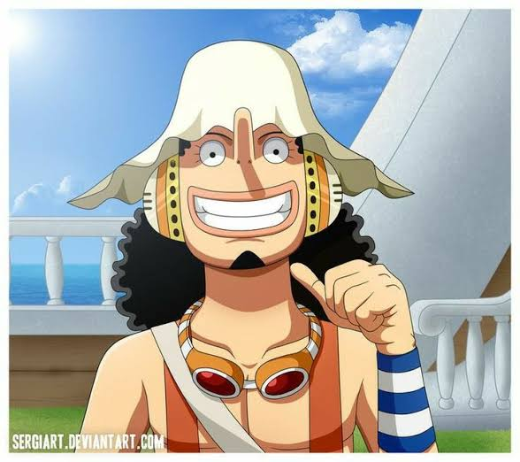
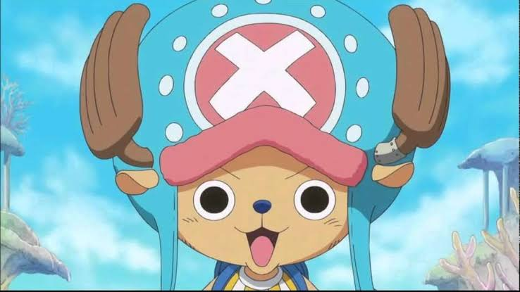
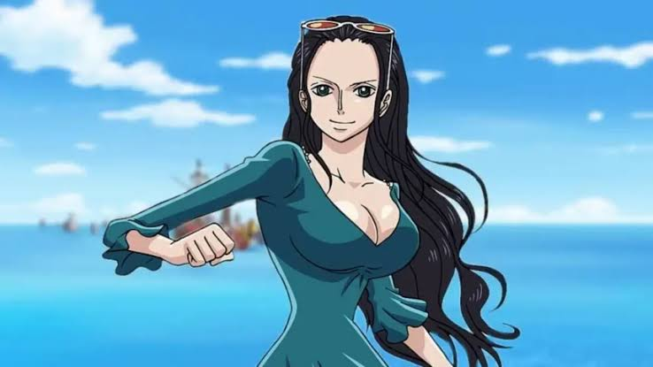
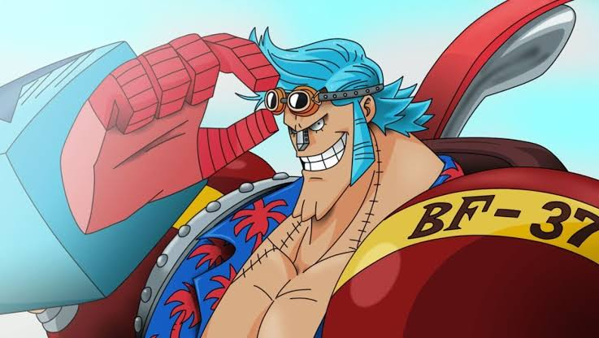
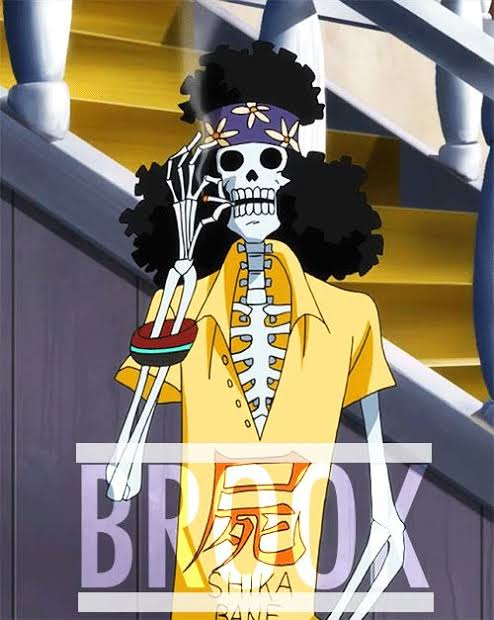

One Piece
- Oque é One piece
- Personagens Principais
- Criação de One Piece
- Princinpais Conquistas e Premiaçôes
- Dados Adicionais
- Links Utilizados

O que é One Piece
One piece é uma série de mangá escrita e ilustrada por Eichiro Oda . Os capítulos têm sido serializados na revista Weekly Shōnen Jump desde julho de 1997, com os capítulos compilados e publicados em 108 volumes tankōbon pela editora Shueisha até abril de 2024. One Piece conta as aventuras de Monkey D. Luffy, um jovem cujo corpo ganhou as propriedades de borracha após ter comido um fruto do diabo acidentalmente. Com sua tripulação, os Piratas do Chapéu de Palha, Luffy explora a Grand Line em busca do tesouro mais procurado do mundo, o "One Piece", a fim de se tornar o próximo Rei dos Piratas.
Personagens Principais: Piratas do Chapéu de Palha
O Capitão: Monkey D. Luffy
O Espadachim: Roronoa Zoro
O Cozinehiro: Sanji
A Navegadora: Nami
O Atirador: Ussop
O Médico: Chopper
A Arqueóloga: Nico Robin
O Construtor Naval: Franky
O Músico: Brook
O Timoneiro: Jinbe

A criação de One piece
Oda começou a escrever One Piece em 1996, enquanto trabalhava como assistente de Nobuhiro Watsuki.Começou com duas histórias em one-shot, intituladas Romance Dawn, que mais tarde seria usado como o título do primeiro capítulo e volume de One Piece. Ambos apresentavam o personagem de Luffy e incluíam elementos que apareceriam mais tarde na série principal. A primeira dessas histórias curtas foi publicada em agosto de 1996 na Akamaru Jump e posteriormente em One Piece Red. A segunda foi publicada na 41° edição da Weekly Shōnen Jump em 1996 e republicada na coleção de histórias curtas de Oda de 1998, Wanted!
Conquistas e premiaçôes
| Premiação | Categoria | Ano |
|---|---|---|
| Crunchyroll Anime Awards | Melhor personagem principal | 2024 |
| Crunchyroll Anime Awards | Melhor Série Contínua | 2024 |
| Crunchyroll Anime Awards | Melhor Série Contínua | 2023 |
| Tokyo Anime Awards | Entrada notável | 2002 |
| Tokyo Anime Awards | Melhor música | 2002 |
| Data de coleta das informaçôes: 21/06/2024 | ||
Dados Adicionais
- One piece é o mangá mais vendido do mundo, ultrapassando a amrca de 500 milhôes de cópias vendidas.
- Atualmente One Piece está em seu 11° arco, chamado Egghead: A ilha do futuro
- One piece conta com 1106 episódios, 4 OVAs, 13 especiais e 15 filmes, desde seu lançamento em 20 de outubro de 1999
- Em One piece, uma das principais fontes de poder são os frutos do diabo(ou akuma no mi). Esses frutos dão ao usuário uma variedade de poderes sobrehumanos, como fazer coisas levitarem, tornar pessoas em brinquedos, gerar uma onda de choque e etc.
- Atualmente existem mais de 132 akumas no mi diferente no mundo de One piece